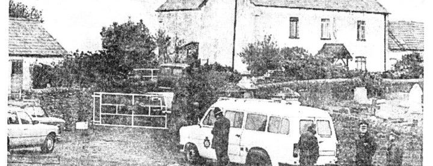
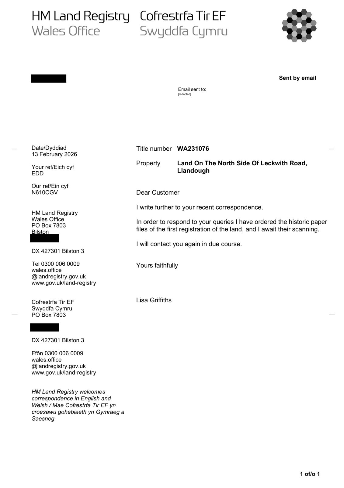
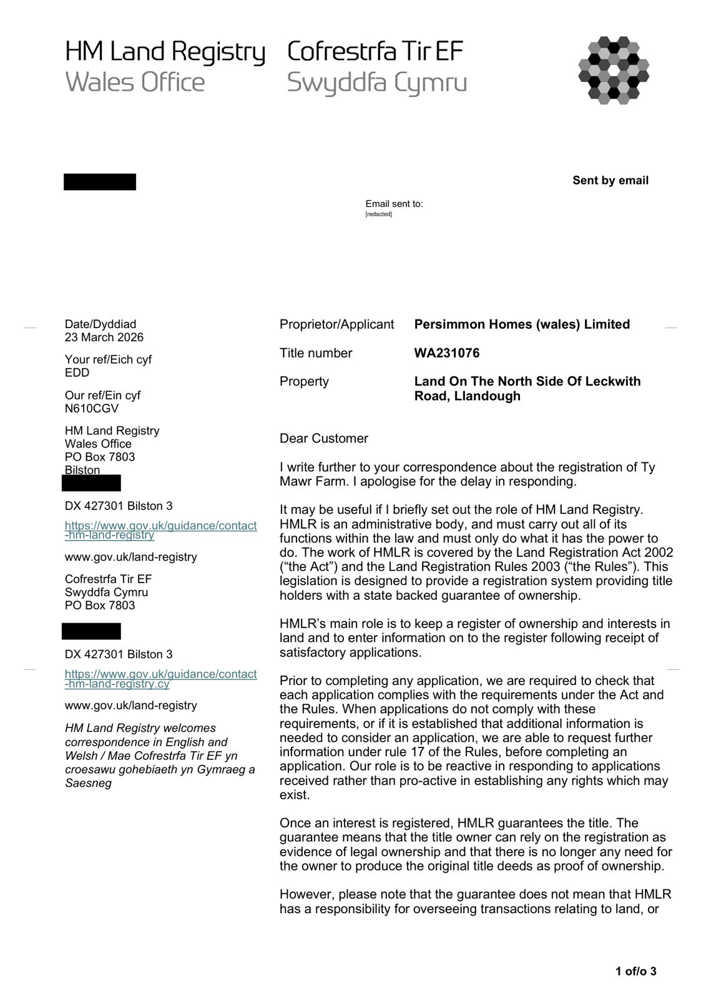
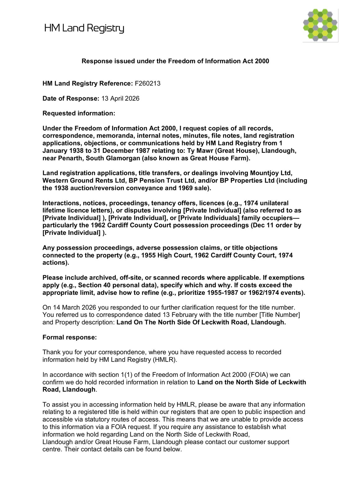
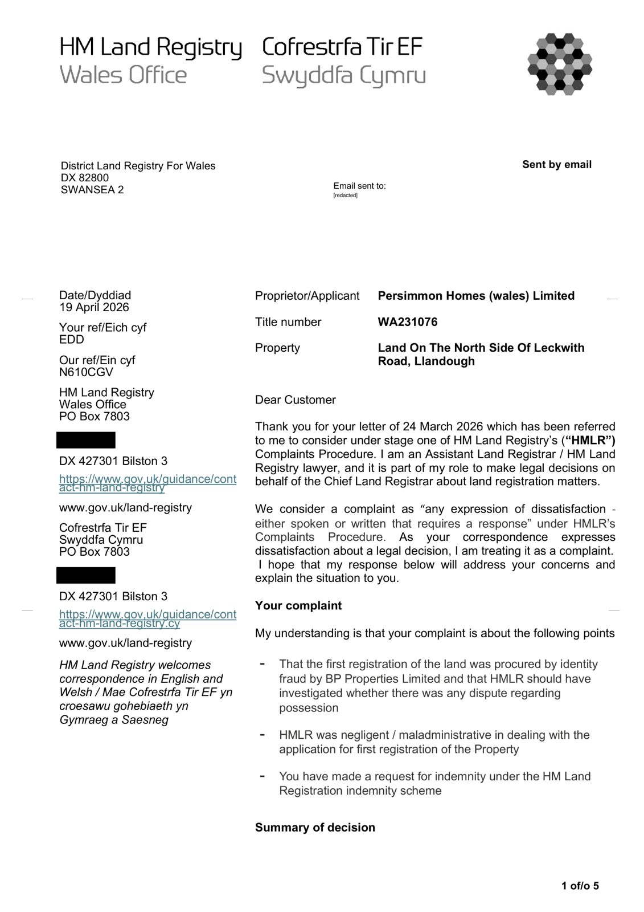

St Dochdwy’s, beside the farm, thought to be an early monastery (SOURCE PENDING; published reference awaited)
Source: archaeology / Master Timeline, c. 650

Cover: “Police wait outside the farmhouse”, April 1988 (EV-0086)
Great House Farm (Tŷ Mawr) · Llandough-juxta-Penarth
The family archive timeline. The newspaper and TV reports now appear as posts by each paper on the feed.
38 posts from 2005 to 2026, oldest first. Each is dated to the event, not to when it was posted. Images appear only on the post whose date they match; undated images are in Photos.
St Dochdwy’s, beside the farm, thought to be an early monastery (SOURCE PENDING; published reference awaited)
Source: archaeology / Master Timeline, c. 650
Excavation published (814 articulated burials)
Source: archaeology / Master Timeline, 2005
Part of the woodland title divided off
Source: woodland / Master Timeline, 22 December 2005
Forest of Cardiff received £20,000 for land at Leckwith Road, Llandough in the year 1 Jul 2005 – 30 Jun 2006, the year of the 2 Dec 2005 transfer to Goldsworthy Homes. Which land was sold is not yet established.
Source: EV-0217, Year to 30 June 2006
Earliest case email on file: the BP Properties v Buckler (CA, 31 Jul 1987) report shared under “Quiet Title and Adverse Possession” (PENDING (private email, not published))
Source: Master Timeline, 23 March 2016
GGAT’s 1990 report accessioned to the national record
Source: archaeology / Master Timeline, March 2019
The family writes to MP for the Vale of Glamorgan with a report; the LCC Clerk appears to have been copied
Source: MPs correspondence M47 / Master Timeline, 14 November 2025
Vale of Glamorgan councillor (Vale councillor) replies once: “If you’d like to discuss, please let me know”; then silent to 6 later emails
Source: Vale correspondence M49 / Master Timeline, 14 November 2025
LCC Clerk: “unable to assist with the matter you raise”
Source: LCC correspondence M02 / Master Timeline, 20 November 2025
HMLR Customer Support asks for the title number and details of the 1982 irregularities raised
Source: HMLR correspondence M03 / Master Timeline, 2 February 2026
HMLR refers the family’s emails on WA231076 to a senior officer
Source: M05 / Master Timeline, 6 February 2026
Complaint to HM Land Registry, refused at both stages; schedule of files released

Source: HMLR 2026 / Master Timeline, 13 February – 30 July 2026
HMLR Wales Office letter, ref WA231076/A/216/LG
Source: M06 / Master Timeline, 13 February 2026
HMLR FOI team: cannot proceed without a title number
Source: M11 · M14 / Master Timeline, 12–13 March 2026
HMLR letter: WA231076 application received 30 Nov 1982 (Linklaters & Paines for BP Properties); WA240304 received 23 Feb 1983; titles amalgamated; “no evidence of a mistake in the register”

Source: EV-0147 · M16 / Master Timeline, 23 March 2026
HMLR FOI response F260213

Source: EV-0148 / Master Timeline, 13 April 2026
HMLR stage-one complaint decision; the family’s stage-two complaint the same day

Source: M20 · M21 / Master Timeline, 19 April 2026
The family’s FOI request to LCC (all records, incl. Billy Buckler addressing the council c.1988)
Source: LCC M04 / Master Timeline, 18 May 2026
HMLR stage-two decision: “second and final response”

Source: EV-0153 · M27 / Master Timeline, 25 May 2026
Cadw ATISN 27021: the house was assessed for listing and “did not meet the listing criteria”; only record two 29 Jul 1988 photographs

Source: EV-0094 · EV-0095 · Cadw M23 / Master Timeline, 11 June 2026
LCC Clerk: minutes from 1982 deposited at Glamorgan Archives in 2002; s.21 FOIA. The family’s same-day follow-up unanswered (126 days at 18 Oct)
Source: LCC M06 · M07 / Master Timeline, 14 June 2026
South Wales Police FOI 719/26: “hold no information”

Source: EV-0159 · Police M33 / Master Timeline, 16 July 2026
HMLR lists the first-registration files: 30 items WA231076 (incl. amalgamation application 2 Feb 1987; BP→Ideal Homes transfer 3 Dec 1993), 13 items WA240304 (incl. Form 1C); copies £11 each on form OC2, by post, cheque

Source: HMLR M39 / Master Timeline, 30 July 2026
Letter to the MP, Cadw complaint, Heneb records request; this wiki launched (22 Sep)
Source: campaign / Master Timeline, September 2026
Vale FOI 00211027 releases the 11 Jun 1965 school-site conveyance and the 1965 contract
Source: EV-0042 · EV-0216 · Vale M109 / Master Timeline, 14 September 2026
Office of MP for Cardiff South and Penarth forwards a letter from HM Land Registry’s Chief Executive and Chief Land Registrar; the MP’s office awaits a Ministry of Justice reply (letter itself PENDING; MPs M92, M105)
Source: MPs M92 · M105 / Master Timeline, 18 September 2026
LCC Chair: “We have nothing more to add”
Source: LCC M10 / Master Timeline, 20 September 2026
HM Land Registry’s Independent Complaints Reviewer allocates ICR/090/26 (per the requester’s reply; the ICR letter not found in the mailbox) (PENDING)
Source: Master Timeline, 28 September 2026
Newspaper cuttings from the family archive, Drive and email transcribed (15 items)
Source: press archive / Master Timeline, 3 October 2026
HMLR internal application Z084NQV (ref N610CGV) “to investigate and correct any error that may have been made” on WA231076, opened after the family raised the matter
Source: HMLR M77 / Master Timeline, 10 October 2026
LCC Clerk refuses the 21 Sep request under s.12 (cost); other matters “considered at the October meeting”, no date
Source: LCC M15 / Master Timeline, 11 October 2026
The family asks LCC for an internal review; Clerk sends the agenda: 22 Oct 7pm, public “in person or remotely”
Source: LCC M18 / Master Timeline, 13 October 2026
The family applies to HMLR to alter the register (Z084NQV / N610CGV, WA240304 and WA231076)
Source: HMLR M78 / Master Timeline, 15 October 2026
LCC Clerk: the 22 Oct meeting “will now be held remotely only”; the family objects the same day (no reply by 18 Oct)
Source: LCC M22 · M23 / Master Timeline, 16 October 2026
Welsh Government answers ATISN 26-0010 (retention and destruction schedules): searches for the farm name, Western Ground Rents Ltd and BP Properties Ltd found no files; routine records “would have been destroyed in line with the corporate retention schedule applied at the time”
Source: Cadw/WG M71 · EV-0244 · letter (PDF) / Master Timeline, 19 October 2026
Cadw refuses ATISN 27589 (July–December 1988 listing papers) under FOIA s.14(2) as “substantially similar” to ATISN 27021; the letter names the ICO
Source: Cadw/WG M72 · EV-0245 · letter (PDF) / Master Timeline, 19 October 2026
LCC meeting, 7pm, remote only (scheduled)
Source: LCC M22 / Master Timeline, 22 October 2026
Wales Office internal review of 26FOI 103 due (per the requester’s email; not checked against the authority’s letter) (PENDING)

Source: Master Timeline, 26 October 2026
You’ve reached today. Back to the top ↑